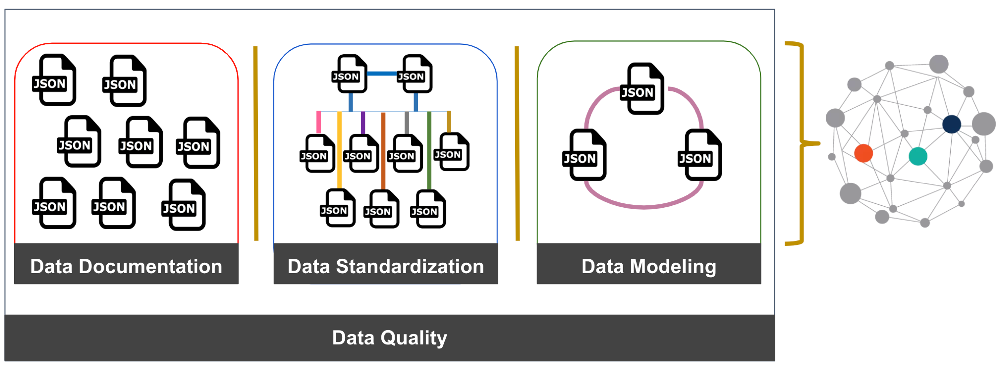

Data Management¶
Threat hunters usually learn to detect adversarial techniques with already processed and cleaned data. This is very convenient and practical while teaching and learning the science of data analysis applied to cyber security. However, it limits some of the data management skills that are also important to have while working in the field (real world). Understanding how data is documented, standardized, modeled and the quality of it is very important while developing an analytic, but usually not considered as priority by several teams.
Nowadays, while most organizations are great at collecting data, they usually do not manage it well to make sense of it and make data driven decisions while developing security analytics. Therefore, I believe that as a threat hunter, it is a must to learn the basics of data documentation, standardization, modeling and quality. The idea is not to have threat hunters do everything needed from a data management perspective, but to provide feedback and recommendations to the team or person in charge of it in an organization.
